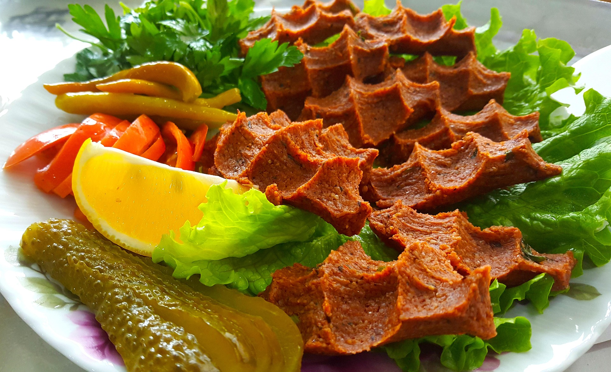

Cig Köfte

2 Stunden
 Schwer
Schwer
 12.03.2026
12.03.2026

| 900g | Bulgur |
| 600g | Rinderhackfleisch |
| 100g | Rote Zwiebeln |
| 100g | Weiße Zwiebeln |
| 5 EL | Paprikamark |
| 3 EL | Tomatenmark |
| 150 ml | Olivenöl |
| 6 | Knoblauchzehe(n) |
| 0,5 Bund | Petersilie |
| 5 Würfel | Eis |
| 2 | Minzblätter |
| 3 Köpfe | Eisbergsalat |
| 5 | Zitronen |
1. Wenn möglich, ein Cig Köfte Blech benutzen. Wer keines zur Verfügung hat, nimmt ein rundes Blech mit möglichst hohem Rand.
2. Die roten und weißen Zwiebeln sowie die Knoblauchzehen sehr klein hacken oder häckseln. Dann samt Flüssigkeit beiseitestellen. Die Frühlingszwiebeln, Petersilie und 2 - 3 Minzblätter möglichst mit dem Messer klein hacken und vorerst zur Seite legen. Auch hier gilt: Je kleiner, desto besser.
3. Nun den ungewaschenen Bulgur komplett auf ein Blech schütten. Dazu jeweils die Hälfte von Paprikamark, Tomatenmark, weißen Zwiebeln, roten Zwiebeln, Knoblauch und Olivenöl geben. Alles ein wenig mit Salz, Pfeffer, Koriander, Kreuzkümmel, Isot-Pfeffer und Chilipulver würzen.
4. Langsam anfangen zu kneten. Während des Knetprozesses alle 7 - 8 Minuten einen Würfel Eis in der Masse versenken. Dies verhindert, dass der Bulgur zu schnell aufbackt und drosselt quasi die Bemühungen.
5. Nach 35 - 40 Minuten, je nach Intensität der Knetkünste, müsste der Bulgur eine weichere Konsistenz bekommen haben. Einfach probieren und dabei auch die Würze anpassen. Wenn man der Meinung ist, dass die Masse noch zu bissfest ist, dann 10 Minuten weiterkneten.
6. Jetzt das Hackfleisch der bisherigen Grundmasse zufügen. In ca. 5 - 10 Minuten das gehackte Fleisch in die Bulgurmasse rühren. Anschließend die andere Hälfte von Paprikamark, Tomatenmark, Zwiebeln, Knoblauch und Olivenöl in die Masse geben und wieder für ca. 5 - 10 Minuten kneten.
7. Für eine schöne Farbe kann man nun auch etwas Granatapfelsirup hinzugeben. Mit Salz, Pfeffer, Kreuzkümmel, Koriander, Isot-Pfeffer und Chilipulver abschmecken. Es ist wichtig, ab jetzt ordentlich zu kneten und immer wieder zu versuchen, durch reibende Knetgriffe die Masse zu vermischen.
8. Nach weiteren ca. 15 - 20 Minuten des Knetens sollte man prüfen, ob die Masse eine weiche Konsistenz angenommen hat. Wenn die Konsistenz noch nicht stimmt, die Masse ca. 15 Minuten ruhen lassen.
9. Frühlingszwiebeln, Petersilie und Minzblätter ebenfalls in die Masse mischen. Jetzt noch einmal 3 - 5 Minuten kneten.
10. Eine große Platte mit Eisbergsalatblättern und geviertelten Zitronen belegen. Jeweils etwas von der Köfte in die Eisbergblätter rollen und wahlweise mit dem Saft der frischen Zitronen, Granatapfelsirup oder aber ohne Zusätze genießen.